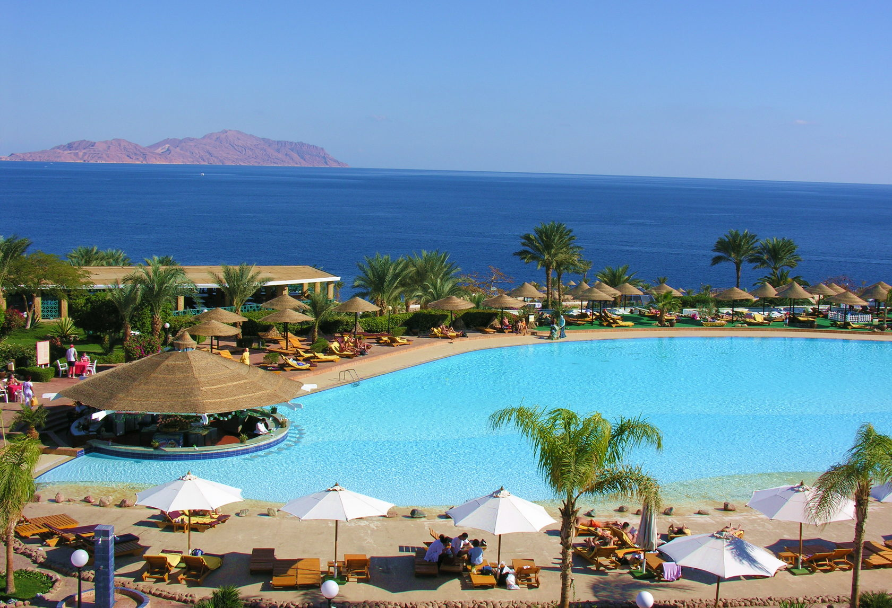
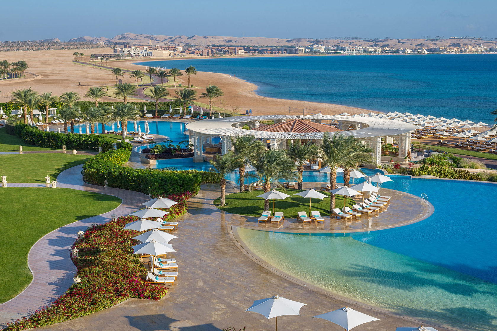

Египет

Все о путешествии в Египет
О стране
Египет – это родина одной из древнейших мировых цивилизаций. Эта страна граничит с Израилем, Сектором Газа, Суданом и Ливией. Территория омывается Средиземным и Красным морями. Это страна, сочетающая в себе таинственность древней цивилизации, притягательность чистейшего бирюзового моря и жаркого солнца. Большинство туристов в Египте – это любители пляжного отдыха и подводных развлечений. Курорты Египта считаются одними из лучших мест для занятий дайвингом, который имеется на всем побережье. Здесь много живописных бухт, где можно совершить глубоководные погружения. Кроме того, стоит совершить поездки по необыкновенным историческим местам, которые на протяжении многих столетий продолжают удивлять и будоражить воображение людей. Вы сможете увидеть многочисленные памятники древнего мира, в том числе одно из семи чудес света, единственного сохранившегося до наших дней пирамид Гизы и Большого Сфинкса.
Разница во времени с Москвой: -1 час
Официальный язык: арабский
Столица: Каир
Валюта: Египетский фунт
Климат страны тропический с редкими осадками и значительными суточными колебаниями температуры. Наиболее комфортные условия для отдыха на популярных курортах Египта отмечаются с ноября по апрель, с оптимальным сочетанием температуры воздуха (+25°С) и воды (+23°С).
Египтяне трепетно хранят свои национальные кулинарные традиции, поэтому их рецептура не меняется с ходом времени. В качестве главных ингредиентов часто используют ароматические травы, чтобы блюда были пряными и ароматными, но не острыми. В основе большинства блюд лежит злаки и овощи, в больших количествах применяется чеснок, тмин, лук, куркума и кориандр. Национальные мясные блюда – это разнообразные кускусы и рагу, стоит попробовать фалафель, «кошари» (рис, турецкий горох, макароны, томатный соус) и классический «фуль медамес» – тушеные бобы с оливковым маслом, луком и чесноком.
Хургада

Хургада – главный туристический центр на побережье Красного моря. Инфраструктура Хургады прекрасно развита, поэтому здесь созданы все условия для полноценного и интересного отдыха. Чистое лазурное море и бесконечные песчаные пляжи дают прекрасную возможность для занятий серфингом. Здесь турист сможет найти идеальный отель, как для спокойного семейного отдыха, так и для тусовочного отдыха молодёжи. Большинство пляжей здесь песчаные, с длинными отмелями у самого берега, что очень удобно для отдыха с маленькими детьми.
Самые интересные исторические экскурсии, такие как посещение Каира, Луксора и Карнака, легче всего совершать, находясь именно в Хургаде. Днем можно побродить по старой Хургаде и спокойно рассмотреть поделки местных ремесленников. Самая известная улица курорта — Шератон, соединяющая морскую набережную с историческим центром Эль-Дахар. Здесь всегда шумно, много туристов и продавцов сувениров. Кроме того, тут полно закусочных, где можно перекусить днем, и ресторанов, в которых приятно провести вечер.
Сахл-Хашиш

Элитный курорт, выполненный в лучших традициях арабской роскоши. Расположен в 18 км от аэропорта Хургады. Идеальное место для туристов, привыкших к высокому уровню сервиса и комфорта. Чистые пляжи растянулись на 12 км, сады, гостиничные комплексы, поля для гольфа, фонтаны, водные каналы и лагуны. Главный принцип, согласно которому был построен курорт – не навредить природе. Именно поэтому в Сахл-Хашиш чистые пляжи, а животный мир подводной части курорта удивит своим разнообразием и уникальностью. Одной из прелестей Сахл-Хашиша является то, что вы можете практически в любом месте сесть в гольф-кар и с удобством добраться до пляжа, магазина или отеля. Центральным местом является пляж Иль Густо в Старом городе.
Макади Бэй

Для тех, кто устал от городской суеты и предпочитает спокойный и размеренный, но роскошный отдых на берегу лазурного моря, идеально подойдет новый и процветающий курорт Макади Бэй. Отличие Макади от других курортов Египта заключается в том, что он возник совершенно на чистом месте в уютном одноименном заливе. На территории курорта раскинулись самые респектабельные отели, предлагающие своим гостям первоклассный сервис. Некоторые из них образуют целый конгломерат, где есть множество традиционных восточных магазинов, предлагающих товар на любой вкус – от золотых украшений до ароматических масел и одежды из высококачественного хлопка. Курорт в основном ориентирован на уединённый, спокойный отдых, а также отдых с детьми, поэтому сюда стоит приезжать тем, кто хочет отдохнуть от городской суеты, насладившись всеми прелестями высокого сервиса. Удивительной красоты пляжи, чистейшее море и местный подводный мир с его уникальной фауной. Отдых в Макади можно разнообразить увлекательной рыбалкой, а удочку и все необходимое для рыбной ловли не составит никакого труда взять в аренду.
Сома Бэй

Сома Бей – это молодой, но очень популярный курортный район, обрамляемый красивейшими подводными рифами Красного моря. Сома Бей идеально подойдет тем, кто едет за тишиной и покоем и обожает красоту Красного моря. Отели в основном имеют категорию 4-5 звезд, отличаются новизной и принадлежат к лучшим мировым отельным сетям. Здесь есть все для развлечений: от зажигательных ночных дискотек до профессионального занятия гольфом, ведь именно здесь находится лучший гольф-клуб на побережье Красного моря. Еще одна гордость курорта — третий по величине на Ближнем Востоке центр талассотерапии. Его специалисты лечат заболевания кожи, нарушения обмена веществ, нервные болезни и другие проблемы, вызванные стрессом.
Сафага

Сафага – небольшой тихий городок недалеко от Хургады. Это еще одно идеальное место для виндсерферов и любителей спокойного семейного отпуска: чистое море, золотые пляжи и ненавязчивость местного населения – главное преимущества данного курорта. Обычно на пляжах немноголюдно, поэтому отдых в Сафаге определенно понравится всем, кто любит тишину и покой. Если вы давно хотели поплавать с черепахами, поиграть с дельфинами, повстречать осьминогов, увидеть морскую корову-дюгонь и весь колорит Красного моря – путешествие в Сафагу осуществит вашу мечту. Любители дайвинга и серфинга принесли в этот городок свою субкультуру: они часто устраивают на пляжах зажигательные вечеринки.
Эль-Гуна

Эль-Гуна – чарующий город всего в 30 км от Хургады, и совершенно непохожий на другие курорты Египта. Все отели и постройки курорта Эль-Гуна находятся на небольших островках, соединенных между собой мостами и каналами, по которым курсируют небольшие лодочки, этот город часто называют «Венецией в песках». Эль-Гуна представляет собой произведение современного архитектурного искусства, сочетающее в себе традиционные и современные элементы.
На территории курорта есть прекрасные пляжи и современные уютные отели, поля для гольфа, конюшня, картодром, теннисная школа и все возможности для занятий рыбалкой, виндсерфигом, кайтсерфингом и яхтингом. Это отличное решение для тех, кто уже побывал в Египте ни раз и ищет для себя что-то новое. Практически на всех пляжах Эль-Гуны в море есть отмели протяжённостью до 500-600 м, что привлекает сюда туристов, которые отдыхают с детьми. Самые популярные пляжи курорта расположенны на отдельном острове Zeytouna Beach и Mangroovy Beach, где также находится база для занятий кайтсерфингом.
Шарм-Эль-Шейх

Шарм-эль-Шейх – это самый современный и динамично развивающийся курорт Синайского полуострова. Раскинувшись на самом побережье Египетской Ривьеры. Он совсем не похож на типичный египетский курорт, а напоминает скорее один из средиземноморских курортов Европы. Каждый турист обязательно должен обратить внимание на Шарм-эль-Шейх, который уникально сочетает в себе развлечения, достопримечательности и морские красоты, потому как именно здесь есть все для качественного, интересного, а, главное, общедоступного отдыха.
Туристический центр города Наама-Бей днем и ночью встречает туристов современными торговыми центрами, чудесными сувенирными лавочками, казино, множеством ресторанов, кафе, ночных клубов и спортивных площадок. Почувствуйте колорит восточного мира и окунитесь в атмосферу восточного базара посетив арабский рынок Old Market, где можно приобрести массу полезных и красивых вещей. В пределах Шарм-эль-Шейха расположен всемирно известный национальный парк «Рас-Мохаммед», образованный слиянием этой территории с национальным парком «Набк». При этом в оба парка можно приехать отдельно.
По всем вопросам свяжитесь с нами любым удобным способом:
E-mail: trohin.zh@yandex.ru
Телефон: +7 (963) 649-18-52
Соцсети: Вконтакте | Instagram | Telegram
Индивидуальный предприниматель Трохин Евгений Альбертович
ИНН 503613656680 / ОГРН ИП 315507400016056
Заполните анкету
Мы подберем идеальный тур, исходя из ваших желаний и эмоционального настроя.